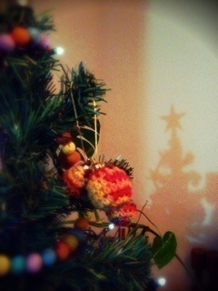
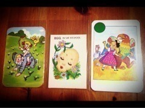
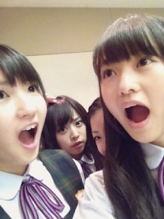

2012/1207Fri311回目*marika

ツリーのてっぺん
地震すごかった...
みなさん、大丈夫ですか？
......
テスト終わった!!!
今まさに喜びのポーズをしています。
今日はね。
仲良しメンツで約束してたもんじゃを
食べましたよー！
やー最高。
もんじゃ、お好み焼き、焼きそば
全部食べました。食べすぎました
本当に、食べすぎました。
めっちゃしゃべったなあ
泣いたり笑ったりー♪
たくさんお話できてよかったー
本当おもしろい。笑いが絶えない。
またもんじゃ行くぞー！
その後吉祥寺で雑貨屋めぐり
＼購入品／

Pin's ups
ヴィンテージのゲームカード3枚
ここの雑貨屋さん
ずっと昔からすきで...
宝箱みたいに全部が最高にかわいい！
......
テスト終わったらやることリスト
・もんじゃ食べる！...達成
今からやること。
・掃除
早く終わったら
友達に借りてる漫画じっくり読んで、
そのあと図工しよう。
よし←
**********
 まりかのは
まりかのはどのDVDに入ってるん(・・?)
 Type-Bです！テストどうだった？できた？
Type-Bです！テストどうだった？できた？あ、できなかったのか(笑)
んま！...
やっぱり文系だなあー
かわいい曲とかっこいい曲どっちが好きですか？
ダンス激しいのも好きだけど、今はかわいいのが好きかな。
人見知りとか、、握手会平気？(笑)そこで人見知り発揮しません！pv作るときはまりかも入って一緒に作るの？？
それとも監督さんだけ？
もちろん撮影は一緒に！内容は監督さん、スタッフさんです。
明日を考えないってどう思う？明日を考えないときってあるの？私は無意識に考えてしまいます。
明日は何しようかなって。
考えてる時間が、わくわくしてて
いちばん楽しいんじゃないかな。
もし、明日が嫌な日だったら
嫌な日が終わったらのことを
考えます。
ちなみに伊藤ちゃんずの相方はセンターフライだったけど
まりっかは取れるん？ｗ
無理です！どぎゃん！今回のまりかさんの個人PVは、苦手克服ができたか?という観点
ではなく純粋に楽しんだほうが
よさそう。?
それは...みなさんの自由で！でも、楽しんで見た方が、
楽しく見れる...はず。
**********
いつかのホテルで！
2ショット失敗写真
ひめかが送ってくれました笑
...ひめか
ちょうど写ってないのよ; ;
ふたりでちゃんと写った写真、
いつかひめかが載せてくれるかな
では、おやすみなさい！
まりか
2012/1206Thu310回目*marika
絶賛テスト勉強中。
今日は前髪ちらかして
テストを受けた。
.........
個人pvのダイジェスト見た人ー！
＼はーい／
...え？！ってなった？！
そりゃ、なるよね。
克服内容...人見知りだもの。
そんなふうに見えないよね。
私もそんな言う程でもないかな
って思ってたけど
今までのこと思い出したら、
私 は 人 へ の 警 戒 心 が 強 い
一種の人見知りかもしれん。
でも、まさかこれがテーマなるとは
思いませんでした。
「マリッカ的☆コミュニケーション」
着いてすぐ撮影が始まったので
かなりテンパってる。
しかも、相手は...
...ん？
これ、コミュニケーションて
いうけど...どうやって...？

私なりに頑張りました。
私なりの！コミュニケーション！です
いろんなものが詰まった内容に
なっているので、
楽しみにしててください
制服のカーディガンの紺色。
地味なのだいすき ふう！
ふう！
ふう！まりか
2012/1205Wed309回目*marika
*****HaPPy BirThDAy*****
せいたん♡2012.12.5
今日ぎゅってしました てへ
てへ
てへせいたん私のこと童顔童顔って
めっちゃからかうんよ。
そんでね、私が言い返すの！
ま「なんでよー！こんのちびー」
せ「 ？」
？」
？」ま「ごめんなさい(早口)」
いっつもこのやりとり笑
でもすぐぎゅーとか
ちゅーしてくるしなあ
もうねぇなんなのツンデレ！
いや、違う！いや...ちがくない←
優しい。せいたんは本当に優しい。
頼れる存在。
だいすきだよ らぶたん！
らぶたん！
らぶたん！せいたんともっと語りたい～
また家遊びに行こっと♪
せいたん、みさのおかげで
「なんなんっち」とか
「～しちょん」が口癖になったわ。
みんな
なんなんっち
使ってるわ。
............
今日はあああーーー
メンバーに会ったんですよおおお
極度のメンバー不足だったため
会ったら嬉しすぎて
ずっと耳が真っ赤でした。
本当はメンバーひとりひとりの
髪の毛ぐっしゃぐっしゃに
したかったです。
してません←
「くちびる腫れてん」
テスト頑張る
まりか
2012/1204Tue308回目*marika
こんばんは
メガネにマスクは
曇っちゃって何も見えない。のね。
まりっ会の会員さんはこれをどうぞ
え、冗談だよ笑
レッスン着用に使ってるこのTシャツ
くたくたになっちまった。
新しいの買おう！
......
さゆにゃんは金魚の口のまね
上手いんだよ
昨日の写真はその口じゃないけど笑
後ろのカメラ目線どや顔ねねちゃんと
ちょろっと写ってたのはひなちま。
結局、あれ、何してたんだろうね←
......
明日はFNS歌謡祭です！
見てください♪
出演するメンバー頑張れ
私も久しぶりに撮影頑張るよー
テストもー
まりか
2012/1203Mon307回目*marika

伝わるだろうか...
さゆにゃんと私が何をしてるのか
伝わるだろうか...
.........
今日はおかしかったー
なんでたー
なんであんなに笑ったんだー
体育の小さいゲームで
熱く盛り上がるほんの一部の中に私。
はしゃぎすぎだろーう！ってい
こんばんまりっか
絶賛テスト勉強中でございます！
いつまで内容薄いブログが続くと
思ったら、、
今週で終ーーーーわり！
テスト終わったらやることリスト
書いて、それに向けて頑張っておる。
.........
理解できた。よ
ついでに数学も。
いつかパンッて出たらいいな。
変わろう自分。ピカピカしてやる。
「こてっ」
昨日のコメント嬉しかったです
握手会はまだかーーっっ
まりか